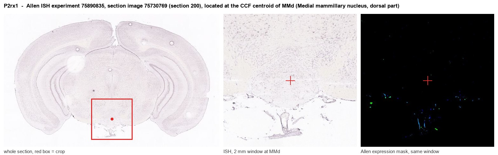
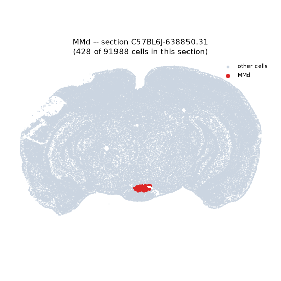
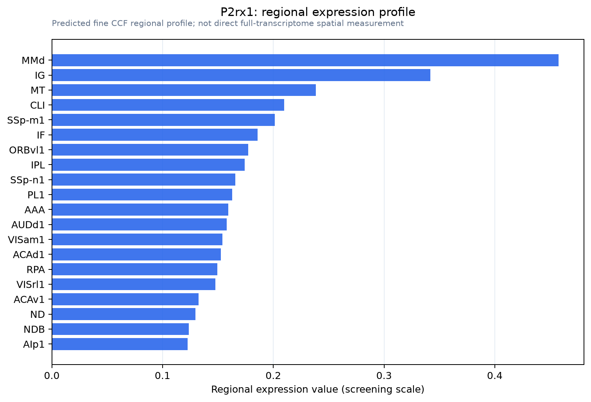

P2rx1
P2X purinoceptor 1 (P2X1) (ATP receptor) (Purinergic receptor)
Spatial tier: RESTRICTED · Class: ION_CHANNEL · Top region: MMd (Medial mammillary nucleus, dorsal part) · Positive regions: 18/554
46.7Discovery Score
36.4Targetability Score
CEvidence grade C
What this means: P2rx1: fine CCF profile is restricted toward MMd (top regions: MMd, IG, MT, CLI, SSp-m1; 18 positive regions); direct spatial validation is still required.
Function in MMd: evidence, prediction, innovation
- Gene function
- P2RX1 encodes the P2X1 subunit of the ATP-gated ionotropic purinergic receptor family. P2X1 homotrimers have the highest ATP sensitivity and by far the fastest desensitisation kinetics in the family, deactivating within tens of milliseconds, which makes them suited to brief, phasic purinergic signals. They are best characterised in vascular and visceral smooth muscle, where they mediate sympathetic purinergic vasoconstriction, and in platelets.
- Region function
- The dorsal part of the medial mammillary nucleus relays subicular input via the mammillothalamic tract to the anteromedial and anteroventral thalamus; it supports hippocampal theta rhythm and spatial and episodic-like memory in the Papez circuit.
- Published in this region
- inferred No region-specific literature found. Central P2X1 reports are sparse and largely non-neuronal: Franke et al. 2001 described P2X receptor expression on astrocytes in rat nucleus accumbens, Heine et al. 2007 surveyed P2 receptors in the developing dopaminergic system, and Xu et al. 2026 implicate astrocytic P2X1 in remyelination; the mammillary bodies have not been examined.
- Predicted function
- Prediction: in the dorsal medial mammillary nucleus, P2X1's very fast kinetics make it a good candidate for a phasic excitatory conductance on astrocytes or on the dense local vasculature, tying the high metabolic demand of theta-locked mammillary firing to local blood flow and astrocytic calcium signalling. P2rx1 deletion, or the selective antagonist NF449, is predicted to leave mammillary firing rates unchanged at rest but to impair neurovascular coupling during hippocampal theta and reduce the ATP-evoked astrocytic calcium transients in MMd slices, with a subtle downstream cost to hippocampal theta power and spatial working memory under metabolic challenge.
- Innovation
- ★★★★☆ 4/5 P2X1 is essentially unexamined in the central nervous system and highly selective antagonists exist, though its likely vascular or glial identity makes a striking neuronal phenotype improbable.
- Tools
- P2rx1 knockout mice (viable, widely used in platelet and smooth-muscle research); selective antagonists NF449 and NF023, agonist alphabeta-methylene-ATP; anti-P2X1 antibodies (Alomone APR-001); Gfap-CreER and Aldh1l1-CreER for astrocytic restriction; mammillary access with retrograde AAV from anteromedial thalamus.
- References
Direct evidence located at the region

Allen ISH experiment 75890835, section image 75730769 (section 200): the section that contains the CCF centroid of Medial mammillary nucleus, dorsal part according to the Allen image-to-atlas alignment (reference_to_image), with a 2 mm window around that point. Left: whole section, red box = window. Middle: ISH signal. Right: Allen's expression-mask view of the same window. open this image in the Allen viewer
Look it up yourself: Allen Mouse Brain ISH for P2rx1Allen reference atlas: MMd (structure 606826659)ABC Atlas MERFISH viewer(in the ABC Atlas choose dataset MERFISH-C57BL6J-638850-CCF, colour cells by gene "P2rx1" or by parcellation_substructure "MMd")All genes confined to MMd + 3-D brain
Direct spatial evidence
MERFISH REGION LOCATOR

Regional expression figure

Predicted WMB × fine-CCF profile; not direct full-transcriptome spatial measurement.
Spatial profile
Evidence and specificity
- Evidence status
- PREDICTED_FINE
- Direct sources
- None; predicted localization only
- Exclusive threshold
- 12 positive regions out of 554
- Spatial specificity
- 0.308
- Top-region fraction
- 0.069
- Filter status
- PASS
Interpretation limits
- Cell-type-to-region projection is imputed expression, not direct spatial measurement.
- Adult reference atlases do not establish stability across age, sex, strain, state, or disease.
- Transcript abundance does not guarantee protein abundance or genetic-tool performance.